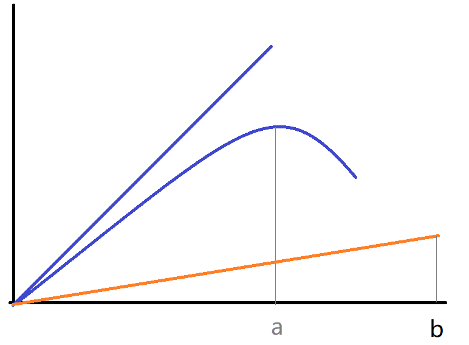
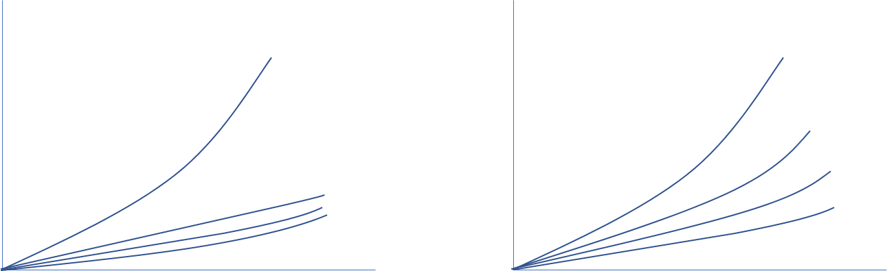

正义论
- 我想读《正义论》的原因其实比较复杂，因为很早就知道这本书，从来没有真正下决心开始读。然后就听了不少周边的介绍，比如周濂老师的《简明西方哲学史》，还有梁文道的1001夜里的书籍介绍。我在自己翻看其他杂书和思考的过程中，越来越觉得：我应该无法同意《正义论》的观点，但是没看过书的人，又没资格说这种话，所以正好借此机会，好好的读一读这本书。（然后找到反对的理由）
- 译者前言
collapsed:: true- 印象比较深的是两段：
collapsed:: true- 道德理论是一种描述我们的道德能力的企图，正义论即为描述我们的正义感的一种企图，与描述我们的语法感需要一种语法理论相类似，描述我们的正义感也需要涉及原则和理论结构。
- 感想：道德直觉在先，道德理论在后，那么道德直觉又是怎么来的呢？正义感又是怎么养成的呢？
- 正当与善这两个概念可以说是伦理学的两个基本概念，它们之间的关系也就成为伦理学的一个主要问题，西方伦理思想史上目的论与义务论两大流派的分野就与此有关。
- 感想：罗尔斯将正当置于善之前，而我还是更加认同目的论的看法。如果结果不理想，正当就是一直自我安慰。
- 道德理论是一种描述我们的道德能力的企图，正义论即为描述我们的正义感的一种企图，与描述我们的语法感需要一种语法理论相类似，描述我们的正义感也需要涉及原则和理论结构。
- 印象比较深的是两段：
- 第一章：作为公平的正义
collapsed:: true- 全章总结
collapsed:: true- 首先提出一种比较感性的表达，以后再慢慢趋于严谨
- 阐述《正义论》的研究方法
- 一组假设
- 正义问题：主要研究的是分配正义
- 社会构成：人们合作，接受约束，并追求更大的利益
- 组织良好的社会：人们都严格服从规则
- 理论工具
- 无知之幕：在无知之幕的设定下，以契约论的方式进行推导，作为一种“思想实验”，可以得到某种正义原则
- 原初状态：推导出一种达成契约的原初状态
- 反思平衡：先提出一种假设（作为一种正义观），与我们经过挑选之后的判断进行对照，可能修正假设，也可能修正判断
- 一组假设
- 批驳其他观点
- 功利主义：是一种目的论，会牺牲少数人的利益
- 直觉主义：是多元主义，没有一个定见
- 提出自己的正义论：一组按照词典式的序列，进行排列的原则
- 1. 正义的作用
collapsed:: true- 理解文意
collapsed:: true- 表达一种正义观（以感性的方式）
- 阐述一些假设
collapsed:: true- 人们组成社会，接受约束，为了追求更大的利益
- 一个组织良好的社会：推进成员的利益，受一种公开正义观的管理
- 一种正义观的作用
collapsed:: true- 建立统一标准
- 协调社会关系
- 保障社会合作的稳定性
- 质疑
collapsed:: true- 依然问题多多，斩钉截铁的话当然好听，“某些法律和制度，不管它们如何有效率和有条理，只要它们不正义，就必须加以改造或废除。”，但是：什么是正义呢？所谓绝不妥协的正义，又是什么样的正义呢？
- 似乎作者探讨的正义原则，主要是某种分配的原则，包括利益、权利和义务的分配。这样看来主要是一个公平分配的问题。但是，还是有很多事情，不是分配的，不是多少的计算。比如说，一个人理应受到尊重，这需要如何分配呢？
- 虽然作者一直反对目的论，而强调义务论，但是第一节的最后却说：“在其他条件相同的情况下，一种正义观比另一种正义观更可取是因为它的更广泛的结果更可取。”所以，我想说的是：总是要比较结果的，而我们的目的，总是要追求更好的结果的，光是出发点说得漂亮没用。
- 理解文意
- 2. 正义的主题
collapsed:: true- 理解文意
collapsed:: true- 正义的主要问题是社会的基本结构，或更准确地说，是社会主要制度分配基本权利和义务，决定由社会合作产生的利益之划分的方式。
collapsed:: true- 主要关注：基于制度的分配正义
- 在一个组织良好的社会之中，假设每个人都严格服从规则
- 到底这种研究方法是否符合传统，作者觉得是一致的，但是他的辩解是含混的
- 正义的主要问题是社会的基本结构，或更准确地说，是社会主要制度分配基本权利和义务，决定由社会合作产生的利益之划分的方式。
- 继续追问
collapsed:: true- 从一开始的：“正义的主要问题…是社会主要制度分配基本权利和义务，决定由社会合作产生的利益之划分的方式。”
collapsed:: true- 这里的分配、划分，关键词都是：分。
- 到结尾的：“亚里士多德的定义显然预先假定了一种对什么应当是属于一个人的，什么是他应得的份额的解释。而这些应得的份额，我相信，通常都来自社会制度及制度所造成的合法期望。”
collapsed:: true- 这里的“应得的份额”，依然是某种：分配。
- 但是，我想问的是：有没有一种分配正义之外的正义？我觉得是有的。
- 从“己所不欲，勿施于人”说起，施与受，是一对关键词，而得与受，是两种状态。前一种，是得到某种“份额”，可多可少。而后一种，是受到某种对待，可能公正，可能不公正。如果我们不希望受到某种对待，就不要将这种行为施加于他人，使他人受到同样的对待。例如：我们不希望受到轻视、歧视，不希望被人愚弄，不希望被封锁消息，不希望被限制自由。这些“不欲”，都所有人不愿意遭受的，也是一个正义的社会，应该制止的。
- 第二个问题，是关于“假设”，据说有个农民，他养了一些鸡，但是它们不下蛋，所以他去找物理学家求救。这个物理学家便做了些计算，然后说：“我有个办法，不过只适用于真空中的球形鸡。”后来这个梗被用来黑物理学家经常做出一些不切实际的假设。
- 当罗尔斯说：“我们可以很自然地推测：我们一旦有了一种对于这种情形的正确理论，借助于它，其他有关的正义问题就能比较容易地处理了。在某种意义上，这样一种理论可以为别的一些正义问题提供钥匙。”
- 事实上他在做两步极大的跨越：通过他的一系列简化，能够得到一个适用于理想型社会的正义理论。通过理想的正义理论，设想一个完全正义的社会，可以让现实中的不完美的社会，向这个社会靠拢。
- 第一种跨越可能谬误，而第二种跨越甚至危险。
- 从一开始的：“正义的主要问题…是社会主要制度分配基本权利和义务，决定由社会合作产生的利益之划分的方式。”
- 理解文意
- 3. 关于“作为公平的正义”
collapsed:: true- 理解文意
collapsed:: true- 罗尔斯的理论手段，是打算采用某种尽可能公平的方式，推理得出某种正义的原则。
- 在无知之幕的设定下，以契约论的方式进行推导，作为一种“思想实验”，可以得到某种正义原则
- 质疑
collapsed:: true- 无知之幕是否合理？当我们抹去了所有的差别，是否存在某些差别始终不能抹去，或者不该抹去？比如：性别，年龄，风险偏好？
- 互相冷淡的个人，是否会抹杀了家庭之类的正常的人际关系？只由完全独立的个人订立的契约，是否合理？
- 契约论是否适用？如果是各不相同的人，可以称之为协商、订立契约。但是，如果人与人之间的差异都被抹去，还能称之为契约吗？
- 功利主义是否无法立足？如果计算概率，我有1%的机会成为受害者，有99%的机会成为受益者，我是不是可以选择这个方案？
- 理解文意
- 4. 关于“原初状态”、“无知之幕”与“反思平衡”
collapsed:: true- 理解文意
collapsed:: true- 以反思的平衡为手段，推导得出某种原初状态，这种原初状态将会得到某种契约环境，并且符合我们的正义原则
- 这样的状态除了在原初状态中各方平等，还包括通过无知之幕遮蔽所有的不平等，就是一种各方都能接受的状态
- 举例：累进税率，宗教迫害，种族歧视
- 质疑
collapsed:: true- 首先来细化一个人的决策过程：他们将会“投胎”到一个世界，他们是否能够知道这个目标世界的很多具体情况，比如是否存在多种宗教？然后，他们才能基于自己有可能成为其中的任何一种人，而做出决策。
- 于是，这就存在一个概率问题，假设目标世界的男女比例是1:1，于是：支持一夫一妻制就是一种当然的选择。但是：如果男女比例是1:2呢？一个人有1/3的几率成为男性，有2/3的几率成为女性，TA是否应该支持一夫一妻制？
- 再比如累进税制，这个目标世界的贫富差距到底是多大？如果我有90%的几率，成为赤贫阶层，有9%的几率成为中产阶级，只有1%的几率成为富人。与另一种分布——整个世界的贫富差距是均匀且合理分布的——也许我会做出不同的选择。
- 再比如风险偏好，我是热衷冒风险的人，愿意博取1%的几率成为富人，还是风险厌恶的人，希望最好能够均贫富？
- 再比如：那个目标世界，是否存在多种宗教？宗教之间是否存在明显的巨大冲突？还是本来就能和平共处？
- 总之：一方面人与人之间的有些差异，是不能也不该抹杀的；另一方面，人即使躲在无知之幕的后面，他所面对的究竟是一个怎样的世界，也会影响到他的选择。
- 理解文意
- 5. 关于古典的功利主义
collapsed:: true- 理解文意
collapsed:: true- 功利主义的推论，是从个人的满足的净余额，推广到整个社会所有人的满足的净余额。最大的问题就在于，一个人的痛苦无法被另一些人的满足所抵消。
- 对于正当和善的理解，功利主义（目的论）认为：善独立于正当，正当就是选择最大化的善。于是，正当就成了从善推演出来的概念。
- 关于“功利主义发展史上的公平观察者”，这个不太理解
- 反驳
collapsed:: true- 功利主义与目的论，需要有所区分。
collapsed:: true- 引用廖申白：规范伦理学被分为目的论伦理学与义务论伦理学两大门类。目的论的伦理学有很多的种类，如幸福论、德性论、快乐论、功利论等。义务论也称为道义论，也有多种，如神启论、先验责任论、契约论、程序论等。
- 在罗尔斯看来，所有的这些：快乐主义、幸福论、至善主义，都是目的论，都是功利主义的某种变形而已
- 而我的区分是：通过比较结果来决定取舍的，是目的论。通过将个体的结果加以“积分”来计算总结果的，是功利主义（及其变种）
collapsed:: true- 在我看来，结果可以比较，也必须通过比较结果来做判断。但是：结果无法简单计算（加加减减）
- 一般的功利主义原则，所求的收益会有一个简单的加总求和。但是这会带来一个坏处：某人的受损，被其他人的受益抵消了。更好的功利主义，应该是利害不相抵的。极端的、正义的功利主义，应该是最小受损原则（而不是最大受益原则）。
- 罗尔斯提出的最大最小原则（maximin rule），其实就是上述正义的功利主义的一种更加严格的描述。
- 功利主义与目的论，需要有所区分。
- 理解文意
- 6. 一些有关的对照
collapsed:: true- 理解文意
collapsed:: true- 契约论（正义论）认为正义优先，所以否认为了一些人的较大利益而剥夺另一些人是正当的；而功利主义则认为正义不过是善的最大化
- 功利主义把个人选择的原则扩展到社会，而契约论则不认可这样的扩展，因为存在着目标互异的众多个人，在无知之幕背后，人就不会选择可能会受到损害的原则
- 功利主义是一种目的论，而作为公正的正义，却不是一种目的论（并非不考虑结果的义务论）
- 功利主义认为欲望的满足都具有某种价值（不管欲望是什么），而作为公平的正义，不认为从别人的不自由中得到的快乐是有价值的
- 严格来说，休谟的理论不是功利主义，因为某种形式的共同利益，并未提及损不足而补有余
- 质疑
collapsed:: true- 假设一群人在泰坦尼克上，却不知道自己的实际身份，他们是不是会同意优先救走妇女儿童的原则？哪怕他们可能会“投胎”为成年男性，也必须牺牲自己？
- 如果一个功利主义者，在严格遵守功利主义的原则下，为了更大的公众利益，愿意自我牺牲。这个原则，是不是就是合理的？
- 理解文意
- 7. 直觉主义
collapsed:: true- 理解文意
collapsed:: true- 直觉主义实际上是多元主义者，面对复杂的道德事实，他们承认难以用一种单一的准则，来判断利弊，衡量对错
- 这些最初的原则，甚至可能是互相冲突的，而且无法通过一种更高的原则来为这些原则排优先级
- 不同的人，基于个人的偏好，会对一组最初的原则，赋予不同的权重，使得在评判道德事实时，难以达成一致意见
- 作为个人，可以有一种方式来平衡多种冲突的原则（比如无差别曲线）。但是这样的无差别曲线，并不是一种原则，也无法在人与人之间达成一致，最后还是靠直觉。
- 直觉主义者相信道德事实的复杂性抗拒着我们充分解释我们的判断的努力，使一批互相冲突的原则成为必然。
- 感想
collapsed:: true- 直觉主义，很符合我们普通人的伦理直觉。
- 会不会有一种可能：事实上也只能如此。而那些“哲学家”们，只不过是不甘心停留于冲突的原则之中而已。
- 理解文意
- 8. 优先问题
collapsed:: true- 理解文意
collapsed:: true- 像功利主义那样，只靠一种原则打天下是不行的
- 但是像直觉主义这样，一组原则无法区分优先级，只能靠直觉来判断，也是不对的。这样只是“半个正义观”
- 罗尔斯提出了一种词典式的序列，只有在前一个原则充分满足（或不被采纳）之后，才能考虑后一个原则
- 这样的做法并不能完全排除对于直觉的依赖，但是可以达到一种可以合理依靠的一致判断
- 分析与讨论
collapsed:: true- 区分不同决策类型
collapsed:: true- 作为一个个人，决定如何做出自己的行动，是一种个人决策
- 作为一个社会（集体），决定如何制定一项政策，是一种集体决策
- 作为一个个人，决定（或思考）社会应该如何做出决策，是一种“伦理判断”
- 作为一个社会（集体），决定整个社会应该如何做出决策，是一种“正义论级别的决策”
- 在《正义论》这本书里，并没有清晰的区分这些不同的决策类型，而且往往是用个人的决策判断，来代替整个社会的集体决策的结论
- 原初状态+无知之幕，其实是在追求人人都能做出相同的决策，本质上是一种论证自己的“正义论”的方法
collapsed:: true- 不如追求一种合理的集体决策过程，使得人人都满意
- 这种决策至少分为两个层面：一种是对于程序的抉择（修订、完善），另一种是针对具体事务的决策过程
- 直觉与反思
collapsed:: true- 我们普通人，往往是直觉的，孟子说人性向善：“今人乍見孺子將入於井，皆有怵惕惻隱之心”，就是这样的道德直觉
- 但是儒家还教人反省，所以曾子曰：“吾日三省吾身”，就是希望能够不断的修正自己
- “无事袖手谈心性，临危一死报君王”，虽然常常被人嘲讽，但其实质是：时时修身养性，到了需要道德直觉时，能毫不犹豫的做出正确的判断
- 作为一个更加有追求的普通人，我们也无非是能够更深入的反省，使得自己的各种道德直觉，能够前后一致，能够心安而理得
- 但是，这样的反思与修身，在无知之幕背后，是无法进行的。因为王阳明说：“心能诚意，事上磨练”，其本意就是：要想做到知行合一，必须不断的经历世事，不断的磨炼自身，才能不断精进
- 凭空设想一种原初状态，然后让人在无知之幕背后，推断出一种正义的原则，却不提供任何真实的社会场景，是不成的
- 优先级问题与决策方法
collapsed:: true- 虽然罗尔斯说：“无疑还有一些别的方式，但我将不再考虑它们”，但是其实还有第三种可能：场景分类决策
- 在A场景时，我们应该首先运用第1种原则，在B场景时，我们应该首先运用第2种原则，这其实是一种非常常见的决策方式
collapsed:: true- 还有一种更加明确的分类方式，是基于身份的。在公司里，我的身份是公司职员，我的伦理原则是职业伦理；在家里，我的身份是家庭成员，我的伦理原则是亲情伦理，以此类推。
- 但是：还是由于罗尔斯强调的无知之幕，我们只能在不管场景，不管身份的情况下，被强行要求做出一种伦理学选择，这不合理！
- 区分不同决策类型
- 理解文意
- 9. 对道德理论的评论
collapsed:: true- 理解文意
collapsed:: true- 类似于用语法来描述我们日常的语感，也应该用道德理论，来描述我们的道德感（道德能力、正义观）
- 需要某种标准，来选择我们做过的一些道德判断，也要排除一些判断（缺少信心、迷惑、惊吓、坚持自己的利益）
collapsed:: true- 只保留有利于实现正义感的条件下做出的判断
- 反思的平衡，提出了一种理论建设的思路
collapsed:: true- 先提出一种假设（作为一种正义观），与我们经过挑选之后的判断进行对照，可能修正假设，也可能修正判断
- 另一种思路是：不做假设，仅仅处理各种道德判断的冲突问题，寻求某种一致性
- 基于原初状态（关键是无知之幕），提出“作为公平的正义”，在反思的平衡中进行验证（修正），但是挑选道德判断时要以无知之幕作为依据
- 与功利主义相对照，是因为目前功利主义是主流，且一直没有建设性的替换理论
- 基于契约论的正义论，在加上某种优先规则，也许是一条值得探索的路径
- 反驳与思考
collapsed:: true- 作者在构建道德理论时，通过挑选反思平衡所用的原材料，导致了实质上的循环论证
- 按照中国的传统伦理观，我们做出道德判断之前，强调的是将心比心、以己度人。如果我们能够逐步提升自己的能力，我们就能够以一人之心，度千万人之心，才有可能做出更加正确的判断。
collapsed:: true- 所以关键不是躲在“无知之幕”后面，而是要具备“全知之能”，不要知道更少，而是应该知道更多
- 我们的确应该反思，但是我们的反思不仅仅是用于构建我们的“理论”，更重要的是知行合一，是能够在今后尽可能做出正确的道德判断
collapsed:: true- 当下无愧，事后无悔。就算不能在每件事情上都做到，起码也得做到大节不亏。
- 从这个意义上，每一次曾经做过的道德判断，都应该是我们的反思的对象，而不仅仅是经过挑选的一些判断
- 理解文意
- 全章总结
- 第二章：正义的原则
collapsed:: true- 全章总结
collapsed:: true- 在《作为公平的正义——正义新论》中，作者明确表示：作为公平的正义是一种统合性道德学说还是一种政治的正义观念，这个事情在《正义论》中一直没说清楚，而这本新论将消除这种模糊不清：作为公平的正义现在被表述为一种政治的正义观念。从这个角度，可以更好的理解下述的各项原则。
- 正义的两个原则，需要在一个正义的制度下实施，至少也要追求制度性的形式的正义
- 正义论的总纲：所有社会价值——自由和机会、收入和财富、自尊的基础——都要平等地分配，除非对其中的一种价值或所有价值的一种不平等分配合乎每一个人的利益。
collapsed:: true- 第一个原则确定与保障公民的平等自由（以平等的方式获得各自应得的自由），第二个原则针对社会及经济不平等的方面，制度应该如何设计。
- 社会的基本结构，就是用于分配某些基本的善
collapsed:: true- 有或无的天赋权利，比如自由，应该人人都平等的拥有
- 多或少的社会基本善，比如收入和财富，注定无法完全平均，只能追求：“每一个人都能从不平等中得益”。
- 对第二个原则的解释：不只是追求程序公平，也不去追求结果平等，但是要追求平等的前景（预期）
- 民主的平等=机会公平原则+差别原则（改善最不利者的期望）
collapsed:: true- 如何确定谁是最不利者？
- 如何远离英才统治的社会？
- 基本善主要的观念是：一个人的善是由下述问题决定的：在给定的合理有利的环境里，究竟什么是他最合理的长远生活计划？当一个人多少成功地执行了他的计划时，他是幸福的。简要地说，善就是理性欲望的满足。
- 对个人的原则：从政治的正义观念的角度，而不是从道德学说的角度来理解，就不容易迷惑
collapsed:: true- 公平的原则：现有制度，然后个人服从制度，服从正义的制度的义务
- 自然的义务：可以略过不提了…
- 10. 制度与形式的正义
collapsed:: true- 理解文意：
collapsed:: true- 社会正义的原则的关注点：社会制度针对权利和义务的分派、利益和负担的分配。
- 制度是一组公开的规范体系，用于规范各种行为。
- 规范与制度，应该是公开的，这意味着大家都知道并理解，并且清楚他人也知道并理解。
collapsed:: true- 一个组织良好的社会，由一种共同的正义观有效地调节的社会，对何为正义非正义有一种公开的理解。
- 制定一套制度，就是期望引导人们的行动，并达到对社会正义最好的结果。
- 需要区分单一制度与整个社会体系，单一制度的正义与否，与整个社会体系的正义与否，存在复杂的关系。
- 形式的正义：对原则的坚持，对体系的服从。
- 在实质不正义的情况下，能够做到一定的形式正义，也好过形式都无法保持一致（更大的不正义）。
- 有些人认为：实质正义与形式正义倾向于结为一体，作者打算先存而不论。
- 理解文意：
- 11. 正义的两个原则
collapsed:: true- 理解文意：
collapsed:: true- 正义论的总纲：所有社会价值——自由和机会、收入和财富、自尊的基础——都要平等地分配，除非对其中的一种价值或所有价值的一种不平等分配合乎每一个人的利益。
collapsed:: true- 后续的各种展开，修订，完善，都是从这个“直觉”的理念出发的。
- 第一个原则确定与保障公民的平等自由（以平等的方式获得各自应得的自由），第二个原则针对社会及经济不平等的方面，制度应该如何设计。
- 社会的基本结构，分配某些基本的善——即分配预计每个有理性的人都想要的东西。
collapsed:: true- 社会基本善：权利和自由、权力和机会、收入和财富
- 自然赋予的健康和精力、理智和想像力，不做讨论
- 在罗尔斯的正义论中，自由是“无价”的，它们不允许在基本自由和经济社会收益之间进行交换。
- 功利主义原则追求最大限度地增加期望总额，这允许我们用一些人的所得补偿另一些人的所失。
- 两个正义原则要求每个人都从经济和社会的不平等获利，怎么在这些（使所有人获利的）可能性中选择，下节继续。
- 正义论的总纲：所有社会价值——自由和机会、收入和财富、自尊的基础——都要平等地分配，除非对其中的一种价值或所有价值的一种不平等分配合乎每一个人的利益。
- 个人理解：
collapsed:: true- 有两种分配：一种是有或无，一种是多或少
collapsed:: true- 有或无的天赋权利，比如自由，应该人人都平等的拥有
- 多或少的社会基本善，比如收入和财富，注定无法完全平均，只能追求：“每一个人都能从不平等中得益”。
- 人人都应该有天赋的自由->不平等的情况下要使得每个人都获益->即使不能做到分配的均等，也要实现机会的均等。
- 有两种分配：一种是有或无，一种是多或少
- 理解文意：
- 12. 对第二个原则的解释
collapsed:: true- 理解文意：
collapsed:: true- 两种平等：
collapsed:: true- Equality as careers open to talents / 作为向才能开放的前途的平等
collapsed:: true- 只关注程序正义，不关注分配的结果是否平等
- Equality as equality of fair opportunity / 作为公平机会平等的平等
collapsed:: true- 不只关注程序正义，更要使所有人都有平等的机会达到某一地位，都有大致平等的教育和成就前景
- Equality as careers open to talents / 作为向才能开放的前途的平等
- 巴莱多最佳原则（经济学术语通常成为帕累托最优/Pareto optimality）
collapsed:: true- 个人感觉罗尔斯对于帕累托最优的解释是一种误解。
- 经济学中的帕累托最优，是基于帕累托改进达到极限之后的一种状态。而在罗尔斯的讨论中，却认为存在最优曲线，在这条曲线上的每一个点，都是最优解。
- 按照罗尔斯的理解，只要社会分配，只能通过“损有余而补不足”，则这种分配方案，就是“有效率”的。所以，仅仅通过效率原则，无法找到唯一最优解（仅仅效率原则本身不可能成为一种正义观。）。
- 进一步引入“平等分配”的原则，作为一种“更加正义”的理论
- 四种体制
collapsed:: true- 自然的自由体系：只关注程序正义，追求效率最大化
- 自然的贵族制：只关注程序正义，但是具有较高的自然禀赋的人们的利益将被限制在有助于社会的较贫困部分的范围之内
- 自由的平等：关注结果的机会均等，追求效率最大化，结果会导向”精英主义“
- 民主的平等：关注结果的机会均等，追求”最大最小原则“，符合罗尔斯的《正义论》
- 两种平等：
- 质疑：
collapsed:: true- 到底是衡量所得，还是衡量所感？如果是所得，则是客观的。如果是所感，则可能是主观的。根据边际效用递减的原理，富人少得100块，与穷人多得100块，效果完全不同
- 如果不能引入感受到嫉妒与感受到不公等心理因素，则追求“平均”，就是一种奇怪的目标。
collapsed:: true- 而罗尔斯恰恰明确反对引入嫉妒心等因素
- 一个社会的基尼系数有多大，事实上会导致社会产出量，以及 社会整体的和谐等问题，所以也应该被计算在内。
- 参考文章：
collapsed:: true
- 理解文意：
- 13. 民主的平等和差别原则
collapsed:: true- 民主的平等=机会公平原则+差别原则
- 对图5、图6的解释，沿着O，走OP曲线，每前进一步，X1的收益增加更多，而X2的收益也略有增加。直到a点以后，X1的收益增加，竟然会导致X2的收益减少
collapsed:: true- 在a点之前，对于X1、X2的状况都称得上改善，都符合差别原则。
- 在a点之后，X1受益，而X2受损，就违背了差别原则
- 对图7、图8的解释，因为功利主义，只关注社会的收益总量，所以会出现图7所示的无差别曲线，在这个曲线上的任何一点，都是符合功利主义的追求的。而在对社会进行改善时，只要能进一步增大总量，OP这个曲线，就能继续走下去，一直到图8的a点（比图8的b点，也即图6的a点）更加靠近右下角
collapsed:: true- 所以：“功利主义允许有较大的不平等”
- 质疑：
collapsed:: true- {width 383}
- 如果按照罗尔斯的“差别原则”，我们完全可以走一条更加偏斜的线路，看起来每一步都能够让X2有一点点收益，但是这样却达到了更大的“贫富差距”
- 完全正义：损有余而补不足，以至于补无可补
- 充分正义：如果富者受损时，贫者也会受损，则停止（此时并未达到增加的最大值）
- 质疑：罗尔斯在这里没有画图，其实很难理解。
- 在民主原则（机会公平+差别原则）与效率原则，在都得到充分满足的前提下，是相容的。但是，如果社会的基本结构是不正义的，则民主原则与效率原则就会不一致，因为正义是优于效率的。
- 链式联系
collapsed:: true- 最不利者的期望得到提高，也会有助于提高次不利者的期望，层层往上，就是“链式联系”
- 作者论证了这么一大段，其实是想补足“最大最小原则”的不足之处
- 质疑：
collapsed:: true- 
- 如果我们只关注最底下的一根曲线的增长情况，左边的图：整个社会的贫富差距就会越拉越大；而右边的图，则整个社会还算是均匀发展的。
- 14. 机会的公平平等和纯粹程序的正义
collapsed:: true- 机会的公平平等，不能混淆于向才能开放的前途的概念，而是所有的地位向所有的人公平、平等的开放
collapsed:: true- 主要不是为了效率的理由
- 不完全开放，也许使得社会的整体收益更大
- 但是这样会使人感到自己受到了不公正的待遇，他们被剥夺了人类的一种基本善
- 讨论纯粹程序正义的问题
collapsed:: true- 完善的程序正义的两个特征。首先，对什么是公平的分配有一个独立的标准。其次，设计一种保证达到预期结果的程序。
- 完善的程序正义举例：分蛋糕的人，最后一个拿，这样他就会努力做到均等划分
- 不完善的程序正义举例（程序缺陷）：刑事审判
- 不完善的程序正义举例（目标缺失）：赌博
- 纯粹的程序正义——与日常生活中的复杂情况无关
- 分配正义（distributive justice）与配给正义（allocatiIve justice）的区别
collapsed:: true- 分配正义：公开的规范体系，决定生产什么、生产多少、用什么手段生产。
collapsed:: true- 不是对一定量的可用于已知个人的特定欲望和需求的利益的分配
- 配给正义：对一定量的物品在我们已知其欲望和需求的特定个人中分配
collapsed:: true- 会导向古典功利主义的观点
- 分配正义：公开的规范体系，决定生产什么、生产多少、用什么手段生产。
- 推导出：针对第二个原则的两个小的原则，进行词典式排序
- 机会的公平平等，不能混淆于向才能开放的前途的概念，而是所有的地位向所有的人公平、平等的开放
- 15. 作为期望基础的基本的社会善
collapsed:: true- 期望：无论是否功利主义，都会讨论如何对其“估价”与“比较”
collapsed:: true- 从功利主义来看期望与满足，人与人之间的比较不但有意义，而且可以量化，可以相加减
- 即使反对功利主义，我们依然需要对人与人之间的福利进行比较，而且需要对这些判断给出一种解释
- 人际之间的比较的确面临困难，差别原则可以解决其中的某些困难
collapsed:: true- 通过社会地位排序，找到最低的地位，就能够找到最少受惠者的代表人
collapsed:: true- 只需要对这位代表人，是否最大限度的增加其福利，进行判断
- 无需计算利益的总额
- 差别原则的比较是根据对基本的社会的善的期望做出的
collapsed:: true- 基本善（primary goods）：被假定为一个理性的人无论他想要别的什么都需要的东西。
- 在广泛的意义上说就是权利和自由、机会和权力、收入和财富（先不讨论自我价值感）
- 自由和权力是由主要制度的规范确定的，收入和财富的分配也是由它们调节的。
- 通过社会地位排序，找到最低的地位，就能够找到最少受惠者的代表人
- 基本善主要的观念是：一个人的善是由下述问题决定的：在给定的合理有利的环境里，究竟什么是他最合理的长远生活计划？当一个人多少成功地执行了他的计划时，他是幸福的。简要地说，善就是理性欲望的满足。
- 原初状态中的人并不知道他们的善的观念时，假定他们较喜欢基本的而非次要的善。
- 两个困难
collapsed:: true- 怎样衡量不同的基本社会善？
collapsed:: true- 用一个人代表一个群体，而且是最少受惠阶层，然后动用他的直觉
- 究竟应该衡量手段（基本善）的多少，还是衡量利用这些手段实际获得的满足？
collapsed:: true- 从基本善而来的合理期待。当合理期待被改善， 他的前景也就被改善了
- 要区分“合理期望”与“满足”，前者可以是客观的，而后者是主观的
- 怎样衡量不同的基本社会善？
- 期望：无论是否功利主义，都会讨论如何对其“估价”与“比较”
- 16. 相关的社会地位
collapsed:: true- 既然差别原则要求照顾“最不利者”，或者说“社会地位最低者”，那么：应该按照什么原则来鉴别不同的地位呢？
- 两个正义的原则是要调节因为社会地位不同，出发点不同，而导致的不平等
- 每个人有两种地位：平等公民的地位，收入和财富分配中的地位
collapsed:: true- 按照平等自由的原则，以及机会的公平平等的原则，所有人都应该是平等的公民
collapsed:: true- 根据这一原则，制度是按照它们如何有效地保障那些对所有人平等地接近他们的目的所必需的条件，或者是如何有效地推进那些将同样有益于每个人的共同目的来排出高下的。
- 维护公共秩序和安全、维护公众健康、卫国战争等等
- 严重的困难是怎样确定最不利的群体（the least fortunate group）。
collapsed:: true- 可以选择“不熟练工人”为代表，或者“达不到中等收入和财富的一半的人”
collapsed:: true- 作者的假设是：那些拥有较大的政治权力，或处在制度较上层的人们一般在别的方面也状况较好。
- 【质疑】依然不严谨，到底是地位，还是收入、财富？比如中国古代，士农工商，商人地位最低，但未必是收入最低的。
- 可以选择“不熟练工人”为代表，或者“达不到中等收入和财富的一半的人”
- 作者说：最后情况可能变成这样：对最不利者的更准确的定义被证明是不必要的。
collapsed:: true- 【质疑】简直就是在偷懒，如果无法确定谁是最不利者，很可能就会变成：会哭的孩子有奶吃
- 针对：自然特征基础上的不平等的基本权利，例如：性别、种族或文明的差别
collapsed:: true- “只有当这种不平等有利于X、并能为X接受的情况下才是正当的。”
- 【质疑】这可能会开一个口子，给性别歧视、种族歧视留下生存空间
- 【质疑】到最后也没有给出一个恰当的鉴别原则…
- 按照平等自由的原则，以及机会的公平平等的原则，所有人都应该是平等的公民
- 17. 平等的倾向
collapsed:: true- 本节主旨：讨论正义论两个原则包含的平均主义的意义（一种平等的倾向）
- 不应得：由于出身和天赋的不平等是不应得的
collapsed:: true- 没有一个人能说他的较高天赋是他应得的，也没有一种优点配得到一个社会中较有利的出发点。
- 补偿：例如通过早期教育，以便改善最不利者的长远期望。
- 教育的价值不应当仅仅根据经济效率和社会福利来评价，而是可以提供给每一个人以自信。
- 差别原则不等同于补偿原则，但是达到了补偿原则的某种目的
collapsed:: true- 不是消除差别，而是用这些偶然因素来为最不幸者谋利。
- 那些先天有利的人，只能在改善那些不利者的状况的条件下从他们的幸运中得利。
- 一个社会不能仅仅接受自然差别带来的结果，而是应该通过制度调整差别，来追求正义。
- 差别原则是一种互惠的原则，而不仅仅有利于最不利者
collapsed:: true- 【质疑】这里的论证效力，其实是不够的
- 正义三原则正好对应了：自由、平等、博爱
collapsed:: true- 自由：每个人都应该有平等的权利，去享有最广泛的基本自由权；而其所享有的基本自由权与其他每个人所享有的同类自由权相容。（自由原则）
- 平等：各项职位及地位必须在公平的机会平等下，对所有人开放。（机会均等原则）
- 博爱：社会中处于最劣势的成员受益最大，并与公平救济原则（just savings principle）相容。（差别原则）
- 两个原则的民主解释将不会导致一个英才统治的社会。
- 顺便探讨了一点点关于遗传的伦理学问题：是种族隔离进而导致基因隔离，还是鼓励最广泛的遗传差异。
collapsed:: true- 其实，我没看懂这最后一段……
- 18. 对个人的原则：公平的原则
collapsed:: true- 理解图示
- 从正当概念可以分解出：社会体系和制度、个人的原则以及国际法。
- 首先要确定社会基本结构的原则，再采用所有对于个人的原则，最后才是国际法
- 在以上三类原则确定之后，再讨论各种原则的优先规则
- 论证：在对个人的要求能够提出之前，必须确定正义制度的内容。
- 在个人义务中，会有支持正义的社会制度这样的义务
- 在原初状态中的各方不仅要：选择一种正义观，也要选择一组正当范畴的原则
- 这些原则除了能够导出“关于社会制度的契约”，还有针对个人的“有关公平和忠诚、相互尊重和仁爱这类概念”，以及指导国家事物的原则及契约
- 社会对于个人的要求：公平的原则
- 个人服从制度，进而产生职责的前提条件
- 制度是正义的
- 个人自愿接受制度的安排，以促进自己的利益
- 参加一种互利合作的冒险，他人也可能获益
- 那些同样获益的人，也应该同样服从这一制度
- 公平原则有两部分是很重要的，第一部分说明所涉及的制度或实践必须是正义的，第二部分指出作为必要的自愿的行为的特征。
- 因此：对于不正义的制度，则无义务
- 个人服从制度，进而产生职责的前提条件
- 职责有几种不同于其他道德要求的特征
- 作为自愿行为的结果而产生
- 职责的内容总是由一种制度或实践确定的
- 职责一般是归之于确定的个人的
- 【质疑】为啥不能是：先修身、齐家，再治国、平天下？
- 现在罗尔斯的次序是：先治国，再修身（不谈齐家），再平天下
- 按照中国传统的伦理，先管好自己（己所不欲勿施于人），然后逐渐扩展开来（老吾老及人之老，幼吾幼及人之幼），然后再订立乡规民约，再后来才是制定或遵守国法。
- 一个更大的疑惑是：正义论的框架中，即使讨论到了个人职责，也完全不涉及人际关系之间的职责（责任），个人认为这是一个比较大的缺失。
- 理解图示
- 19. 对个人的原则：自然的义务
collapsed:: true- 作者列举了一组自然义务，却不想将之归一到一个原则之下
- 包括：帮助他人、不伤害他人、不施以不必要的痛苦
- 自然义务的特征
- 与制度无必然联系，并不是由社会安排的规则确定的
- 不管人们隶属于什么制度而始终有效
- 根据作为公平的正义的立场，一个基本的自然义务是正义的义务。
- 要求我们支持和服从那些现存的和应用于我们的正义制度
- 也推动我们去建立正义的制度
- 作为公平的正义允许无条件的绝对原则
- 只需说明在原初状态中的各方将同意确定自然义务的原则（是绝对的）
- 不怎么讨论其他的个人行为，而将讨论限制在跟社会正义理论有关的范围内
- 例如某些“分外”的行为，功利主义无法解释，但是不做过多讨论了
- 【质疑之一】关于金规则
- 马太福音：无论何事，你们愿意人怎样待你们，你们也要怎样待人
- 康德：要这样行动：就是要使你的普遍行为准则成为普遍的自然律那样着眼于道德律的效果。
- 孔子：己所不欲，勿施于人；己欲立而立人，己欲达而达人
- 以上这些规则，既有否定性的表述，也有肯定性的表述。总而言之，却都是推己及人，这是一个可以被总结出来的总原则。
- 但是罗尔斯却不愿意归一到一个原则之下，不知何故
- 【质疑之二】在个人义务与社会契约之间的先后顺序
- 其实，即使按照契约论，在订立契约之前，每个人也都要首先遵守一个个人义务：遵守契约的义务
- 【质疑之三】个人认为，一个社会正义理论对于某些个人的伦理行为存而不论，总是不够完整的
- 作者列举了一组自然义务，却不想将之归一到一个原则之下
- 全章总结
- 第三章：原初状态
collapsed:: true- 全章总结
collapsed:: true- 这是全书理论性最强的一章，通过推导，得出两个正义原则
- 恰当定义一种原初状态（一种纯粹假设的状态）
- 正义的环境，能合作，有竞争
- 恰当给出可供选择的范围，以及这些选择的形式限制
- 两个正义原则、古典功利主义、平均功利主义、至善原则（略）、直觉主义（略）、利己主义（略）
- 形式限制：一般性、普遍性、公开性、有定论、无更高原则
- 恰当定义一种无知之幕
- 抽离了所有的场景；保留了所有的知识
- 恰当定义选择者的特征
- 无嫉妒之心、互相冷淡、严格遵守自己的选择、不会反悔
- 最终就会得出两个正义原则
- 恰当定义一种原初状态（一种纯粹假设的状态）
- 解释最大最小值原则：某种不平等会对所有人有利意味着，某个社会的改善方向，每次变动的前提都是：最不利者也能有所改善
- 论证两个正义原则的可靠基础
- 第一个基础：承诺的强度——必须能够甚至在属于它的最坏情况下仍然尊重它
- 第二个基础：心理的稳定性——人们倾向于热爱、珍惜和支持所有肯定他们自己的善的东西
- 反驳其他几种原则
- 平均功利主义：会将人当做工具，少部分人会被牺牲
- 古典的功利主义：会过于“圣母”，考虑所有人的利益，却唯独不考虑自己
- 这是全书理论性最强的一章，通过推导，得出两个正义原则
- 20. 正义观论证的性质
collapsed:: true- 理解文意
- 理论框架：一种恰当定义的最初状态，理性人选择一组原则，这些原则是实现其目标的最好方式
- 罗尔斯定义原初状态，并且需要证明，理性的人们做出的选择，就应该是两个正义原则
- 因为每个人都不能肆意妄为，大家达成的契约（选择的原则），就是每个人对别人的相应要求的最好回答
- 引入经济学中博弈平衡的概念，”对每个人来说，这种平衡都是他通过自由交换所能达到的最好状态“
- 平衡不等于正义，为了追求一种正义的平衡，需要设定一种符合正义的原初状态
- 它是一种其间所达到的任何契约都是公平的状态
- 原初状态纯粹是一假设的状态
- 基于这样的状态，经过严格演绎推理（道德几何学），得到正义的原则——罗尔斯以此为理想
- 每种传统的正义观中都有一种对最初状态的解释，按该种解释它的原则就是最可取的。
- 作为一种论证的程序，“大家都得走这条路”
- 理论框架：一种恰当定义的最初状态，理性人选择一组原则，这些原则是实现其目标的最好方式
- 质疑
- 原初状态，明明白白的，是由“已经想好要得出的结论”，推导出来的
- 然后再从这样一种假设的原初状态，推导出之前以直觉方式选择的结论——有循环论证的嫌疑
- 换言之：所有契约论的所谓论证，都是某种潜在的自说自话
- 如果不是一种基于真实存在的原初状态，推导得出的契约论，事实上就可能是一种空中楼阁
- 谁都可以另外再搞一套新的，自成体系的契约论。反正也没有谁是更加正确的判断标准。
- 原初状态，明明白白的，是由“已经想好要得出的结论”，推导出来的
- 理解文意
- 21. 选择对象的提出
collapsed:: true- 理解文意
- 提供一组可供选择的正义观，供原初状态下的人们进行选择
- 作者同样认为，这不是一种令人满意的方式，但是也只能从历史传统中挑选几个正义观（古典功利原则与平均功利原则）与自己提出的两个正义原则进行比较
- 虽然可以假设原初状态下的人们有某种偏好，于是直接就能推导出作者提倡的两个正义原则（但是这样也有点过于耍赖了）
- 可供选择的正义观
- A. 处在一种序列中的两个正义原则
- B. 混合的观念
- C. 古典目的论的观点
- 1． 古典功利原则
- 2． 平均功利原则
- 3． 至善原则
- D. 直觉主义的观念
- E. 利己主义的观念
- 需要选出：那些在任何环境里都绝对有效的原则，而不是随着环境变化而变化的原则
- 质疑
- 这就是作者树的靶子了，但是：会不会漏掉一些呢？肯定会！
- 个人认为，罗尔斯的正义观，其实是一种经过繁复包装（论证）后的直觉主义正义观
- 先有了直觉，然后构造一个契约论+原初状态，却论证这个直觉——“并非直觉”。
- 理解文意
- 22. 正义的环境
collapsed:: true- 理解文意
- 要想得出作者所设想的正义原则，需要一些环境方面的假设，作者将其称之为：正义的环境
- 关键假设是两个：人们必须合作，在合作中却又存在竞争
- 一个人单干，能够获得的利益假设是X
- 一群人合作，能够获得的利益在N~M之间，而且N<X<M
- 合作得不好，他得到的利益就会比X更少，那他肯定不干；合作得好，他就会获得比X更多
- 为了使得人们必须合作，需要进一步做出假设
- 不存在一个单独的个人，超出众人太多（自己就能搞定）
- 不存在一个单独的个人，能够凌驾于众人之上（别人无法坏掉他的好事）
- 中等程度的匮乏，使得每个人都不能自得其乐，仅仅靠自己就能活得很滋润
- 合作且有竞争，也需要进一步做出假设
- 大家的利益类似、互补、但是又有差异
- 而且大家又都会对他人的利益，不感兴趣
- 为了实现完全独立的，互不相干的决策，大家都在无知之幕背后，无父无母、无子无女（这样可以简化推理的过程）
- 虽然作者也说：每个人都应当关心某些下一代人的福利，但是却语焉不详
- 圣徒云云的讨论，其实删除了也没啥
- 质疑
- 事实上，完全的个人主义并不现实，我们总是在人际关系的网络之中，做出自己的道德判断
- 再设想一种常见的重男轻女的现象，有些文化中的父母，更加关系男性下一代的利益，甚至会损害女性下一代的利益，在罗尔斯的框架中，事实上是不会被讨论的
- 理解文意
- 23. 正当观念的形式限制
collapsed:: true- 理解文意
- 当人们经过选择，得到了一组正义原则，这些原则在形式上应该具有以下特征
- 第一：原则应当是一般性质的（是用大白话表达的）
- 第二：原则在应用中也须是普遍的（是人人都需要遵守的）
- 因此排除了利己主义
- 第三：原则是公开性的（每个人都知道自己选择的是什么）
- 第四：原则必须对各种冲突的要求赋予一种次序（总能有一个定论）
- 因此排除了直觉主义
- 第五：原则之上不再有更高的原则（到此为止）
- 因此避免了被人再反复追究与盘问
- 感想：很有道理，也很有价值，但是的确只是形式上的价值
- 理解文意
- 24. 无知之幕
collapsed:: true- 理解文意
- 人们做出选择时，有两个前提：所处的场景+充分的知识。两个不同的人，或者同一个人处于不同的场景时，即使掌握了相同的充分的知识，也会做出不同的选择。
- 罗尔斯为了让人们只能沿着他的思路，做出与他一致的选择，所以设计了“无知之幕”：抽离了所有的场景（我是谁，我的偏好，我的地位，以及我处于什么时代），只保留了所有的知识（各种一般事实、理论、法则与原则）
- 最后，我们常识理解的契约是多个不同的个人，达成了一致同意的契约。而罗尔斯的“契约论”，其实并没有多个不同的人，结成某种联盟。而是每一个可能被说服的读者，沿着他的思路，最后同意了他的理论。而且， 不能反悔！
- 质疑
- 关于“选择了一种制度”，却没有“按照它行动的欲望”，这样的情况在“只有一个人”的情况下，其实不会出现。因为事实上并不是契约。但是，如果撤除无知之幕后，一项社会制度被运行起来，有些人获益，有些人受损，自然会有人想要“反悔”。因此，罗尔斯才在自己的推理过程中，试图杜绝反悔的情况。
- 另外就是所谓“一般事实”，事实上这依然不能脱离时代来谈。在没有互联网之前的社会，与有了互联网之后的数字世界，一般事实可能大不相同。在出现了数字货币之后的经济学，与之前的经济学，可能也大不相同。本质上，不同的时代，就是需要有不同的正义观，企图建立一个放之四海而皆准，行之万年而有效的正义观，本身就是妄念。
- 理解文意
- 25. 各方的推理的合理性
collapsed:: true- 理解文意，并进一步质疑
- 延续上文，为了得到作者希望的结论，还需要更多的条件约束。
- 在前文曾经定义：基本善（primary goods），被假定为一个理性的人无论他想要别的什么都需要的东西。
- 这一节又说：哪一种正义观最适合于他们的利益呢？答案是：即他们设想他们将更喜欢较多的而非较少的基本社会善。
- 这实际上构成了循环论证
- 一个人不会有嫉妒之心，这样他才能只关心自己的目标是否达成
- 【质疑】但是：要追求公平，就需要知道大家的差距是否合理呀，将一种心态称之为“嫉妒”，还是称之为“追求公平”，真的有差别吗？
- 因为作者认为：妒忌倾向于使每个人的状况更坏
- 【联想】这使我想起了《美丽新世界》里的设定，大家都吃点索玛（soma），是不是也符合作者的意图呢？
- 只要选择了自己的正义观，就会严格遵循
- 【吐槽】这是因为围绕博弈论的论证已经够复杂了，如果再演化成多次反复博弈，这本书就写不完了
- 相互冷淡和无知之幕的结合达到了跟仁爱一样的结果
- 不是因为我关心别人，而是因为我可能就是那个别人
- 【质疑】但是：这种一次性的抉择，与仁爱还是不同的
- 理解文意，并进一步质疑
- 26. 引向两个正义原则的推理
collapsed:: true- 理解文意
- 哪些论据能够帮助我们，最终赞成两个正义原则？
- 起点是平等：大家都平等的分到机会、收入与财富
- 接下来是变化：虽然会逐步产生不平等，但是，这些不平等的变化，对所有人都会有益
- 两种变化方向
- 对单一个人：他的自由减少，但是经济或社会利益增加【禁止这么做】
- 对于整个社会：有些人的利益增加得更多，但是大家的利益多多少少都有所增加【这个可以有】
- 解释最大最小值规则
- 有N种可能的情况，每一种情况下的最坏结果，进行排序，选择最不坏的那种
- 【特征一】不考虑N种可能情况的概率大小
- 【特征二】不考虑另外补偿的可能性
- 【特征三】所有的人都是绝对的风险厌恶型
- 反驳一种对于最大最小值规则的质疑
- 是否会存在一种情况，沿着最大最小值的改善路径，贫富差距会进一步扩大？
- 【解答一】因为当我们提高较有利者的期望时，状况最差者的境况也不断改善。
- 【解答二】依赖着一种：极端的不平等将不会成为常规的观念。因此……悬殊的等级差别将不会持久。
- 借助论证两个正义原则，批评功利主义
- 语言含混，没看懂
- 质疑
- 某种不平等会对所有人有利意味着，某个社会的改善方向，每次变动的前提都是：最不利者也能有所改善，否则就不做改动。
- 这样只能得到局部最优解，却无法找到全局最优解。
- 最大最小值看起来非常追求平等，但却有两个问题
- 暗含了一个“极端风险厌恶”的前提
- 最富阶层只要分出一点点利益，就能够无限制的追求自己的欲望
- 如果人不该有嫉妒之心，如何会追求平等？
- 某种不平等会对所有人有利意味着，某个社会的改善方向，每次变动的前提都是：最不利者也能有所改善，否则就不做改动。
- 理解文意
- 27. 引向平均功利原则的推理
collapsed:: true- 理解文意
- 古典功利原则：总额最大化；平均功利原则人均最大化
- 如果只追求总额最大，在人数上升时，哪怕人均在下降，只要总额在上升，也是可以的——所以这样不合理
- 在无知之幕背后，人们更可能选择平均功利原则，而不是古典功利原则
- 基于厌恶风险的原因
- 质疑
- 那么在平均功利原则下，整个社会的功利原则不必上升，只要能够不断减少人口，是不是也会增加人均呢？
- 无论是总额还是平均，都是概念游戏，不存在一个比另一个更好
- 理解文意
- 28. 平均原则的某些困难
collapsed:: true- 理解文意
- 存在两次选择：第一次选择某种原则（正义两原则、古典功利主义、平均功利主义），第二次基于选定的原则，再来选择制度
- 从平均功利出发，是可以合理的选择奴隶制的
- 但是从最大最小值的原则出发，不可能会选择奴隶制
- 拉普拉斯推论：如果我们对于概率一无所知，那么就应该假设各种情况的概率都是相同的
- 埃奇沃思的观点：在包括许多场合的一个长时期里，在每一场合里最大限度地增加功利的政策大概都能给所有单独的个人以最大的功利。
- 反驳：埃奇沃思的必要假定非常不真实，而且反复博弈能够抹平差异是虚妄的，制度性分配引发的差异常常是巨大与持久的
- 【吐槽】反驳别人的时候，倒是站稳了现实主义的立场
- 无知之幕引入了概率分析，而且设置为：“各方不知道他们是否对冒险有一特殊的厌恶”
- 【吐槽】事实上这样得到的结论是：各方都只能是极度的风险厌恶者，于是“最大最小值”原则，才能成立
- 功利主义的基础，是不同的人有不同的偏好，所谓“功利”是基于他的偏好而言的
- 但是，在无知之幕背后，到底是谁的偏好呢？这使得实际上颠覆了功利主义的出发点，最后还是只能回到“基本善”的逻辑上来
- 存在两次选择：第一次选择某种原则（正义两原则、古典功利主义、平均功利主义），第二次基于选定的原则，再来选择制度
- 质疑
- 选择某种制度，其实就意味着理解其运作的逻辑，比如奴隶制，一定是1%的人是奴隶主，而99%的人是奴隶。否则这个制度就不可能成立
- 所以，在不知道某一制度的任何概率的情况下，假设各种情况的概率相同，然后就基于某种原则来选择这种制度，这样相当荒谬
- 再推论一步：不考虑任何概率差异的无知之幕，本身就是荒谬的
- 把对方拉入自己的主场（无知之幕），当然无往而不胜
-
- 选择某种制度，其实就意味着理解其运作的逻辑，比如奴隶制，一定是1%的人是奴隶主，而99%的人是奴隶。否则这个制度就不可能成立
- 理解文意
- 29. 两个正义原则的主要根据
collapsed:: true- 理解文意：论证两个正义原则的可靠基础
- 第一个基础：承诺的强度——必须能够甚至在属于它的最坏情况下仍然尊重它
- 在无知之幕背后，基于风险厌恶的心态，会选择最大最小原则，而两个正义原则，符合最大最小原则
- 第二个基础：心理的稳定性——人们倾向于热爱、珍惜和支持所有肯定他们自己的善的东西
- 功利原则会要求人们为了社会的整体利益，而放弃自己的个人利益，这不合理
- 两个正义原则，则鼓励人们互相尊重，每个人的利益都被包括在一种互利互惠的结构中
- 两个正义原则等于是这样一种许诺：把自然能力的分配看作是一种集体的资产，以致较幸运者只有通过帮助那些较不幸者才能使自己获利。
- 讨论将人作为目的，还是作为手段
- 两个正义原则，将人看作目的本身
- 功利主义，可能会将人看作手段，“人们将发现较难信任自己的价值。”
- 功利原则是把人们既作为目的又作为手段来对待
- 它通过把每一个人的福利看得同等重要而把人们看作目的
- 通过允许用一些人较高的生活前景来平衡另一些较不利者的较低生活前景，又把他们看作手段
- 第一个基础：承诺的强度——必须能够甚至在属于它的最坏情况下仍然尊重它
- 讨论
- 很多值得质疑的点，前面也都说过了。正如作者的论证，对于功利主义的批判，其实也是反复阐明过了。
- 我一直以来的疑惑就在于：如果功利主义真的如作者所说的这么不堪，怎么会大行其道这么多年？
- 理解文意：论证两个正义原则的可靠基础
- 30. 古典的功利主义、公平和仁爱
collapsed:: true- 理解文意
- 按照之前的逻辑，大家应该都会选择两个正义原则，或者平均功利原则。那么：坚持选择古典功利主义的原因是什么？
- 由于它是历史上最重要的功利主义形式，它就一定有一种完全不同的根源。
- 理想的观察者，除了理性、公平之外 ，还有同情心
- 这样就会选择古典的功利主义
- 他会考虑所有人的利益，却唯独不考虑自己，完全的利他主义者
- 一个具备同情心的观察者的定义：公正、掌握相关知识、识别想象的能力
- 保证自然同情的完全的和准确的反应
- 公正防止了偏见和自私的歪曲，知识和识别力保证了别人的志愿将得到准确的评价
- 反之：无知之幕条件下的互相冷淡引出了两个正义原则
- 然而：假定各方是完全的利他主义者是不可能的
- 要区分仁爱之心与正义感
- 前者更强烈和更广泛地表现这一欲望，它除了正义的义务之外还准备履行所有的自然义务，甚至要超出它们的要求。
- 按照之前的逻辑，大家应该都会选择两个正义原则，或者平均功利原则。那么：坚持选择古典功利主义的原因是什么？
- 质疑
- 古典功利主义，真的像罗尔斯所描述的这样吗？回头还是得找找功利主义的书来看
- 理解文意
- 全章总结
- 第四章：平等的自由
collapsed:: true- 全章总结
collapsed:: true- 第四章是《正义论》第二编的开篇，因此总起讨论了将理论应用于实际的四个步骤
- 选择正义理论 –> 立宪 –> 立法 –> 执法
- 整个《正义论》，都在讨论：如何维护自由，何为平等的自由，良心的平等自由，如何保障平等，等诸多问题
- 有很多种不同的自由，但是罗尔斯认为：各种基本自由必须被看成是一个整体或一个体系
- 但是在实际上，不同的自由有不同的价值，不同的人会获得或多或少不同的自由，因此会产生两类问题：自由不够广泛，自由不够平等
- 需要考虑最少受益者，提高他们获得的自由的价值
- 关于良心自由，宽容，以及如何处理不宽容者，是一个系列讨论
- 为了限制不宽容者，以维护整个宽容的氛围，需要一些原则，而论证这些原则的时候，又需要避开功利主义的陷阱
- 良心自由要因公共秩序和安全的共同利益而受到限制，与“为了大多数人是否可以牺牲（限制）少数人的自由”，如何区分？
- 进入对于宪法的讨论后，另一种对于政治自由的限制，需要被讨论
- 为了得到更好的投票结果，限制能力不足、智力不足、见识不足的人的投票权，也是可以被论证为合理的
- 因为他们得到了回报，即这种限制形成了对他们的其他自由的较大保障
- 在尝试解答理论应用于实际遇到的困难时，罗尔斯将正义理论分为两个部分
- 理想部分：假设了严格的服从，确立了原则
- 非理想部分：也大致论证了一番
- 最后，论证了《正义论》与康德的道德哲学，有内在的一致性
- 第四章是《正义论》第二编的开篇，因此总起讨论了将理论应用于实际的四个步骤
- 31. 四个阶段的序列
collapsed:: true- 理解文意
- 将正义的理论应用于实际，就是将原则制度化的过程，可以分为4个阶段。
- 选择正义理论
- 在无知之幕背后进行选择
- 立宪
- 稍稍走出无知之幕，了解当前社会的一般事实，但是不知道具体个人的信息
- 设计一种正义的程序，以便能够正义的立法
- 主要为了维护平等的自由（正义的第一原则）
- 立法
- 无知的情况，与立宪时类似
- 主要为了最大程度地提高最少获利者的长远期望（正义的第二原则）
- 执法
- 可以接触所有的事实，公民可以部分地服从这些法律
- 质疑
- 整个正义论都是这样的理论推导，一点一点的从天上落到地上，而在这样的过程中，其实一直需要解释“是不是在空想”的问题。这样的四个阶段，同样忽略了“博弈”的问题，无论是立宪时的多方博弈，还是立法时的各种博弈，都是实际会存在的问题。
- 宪法会不会有修正案呢？在制定宪法的时候，要不要规定“什么情况下可以修订宪法”呢？在罗尔斯的理论里，当然都是不被考虑的。就像在之前的选择正义原则时的人们，不会反悔一样。立宪和立法的过程，也是不能反悔的。
- 理解文意
- 32. 自由的概念
collapsed:: true- 理解文意
- 按照上一节，在立宪阶段，主要是运用正义的第一原则，以维护平等的自由。但是在这一节，作者却试图“绕开关于自由含义的争论”
- 自由总是可以参照三个方面的因素来解释的：自由的行动者；自由行动者所摆脱的种种限制和束缚；自由行动者自由决定去做或不做的事情。
- 首先，各种基本自由必须被看成是一个整体或一个体系
- 存在着两种与第一原则发生冲突的方式：自由的不平等，自由缺乏广泛性
- 最后，人们的自由受到约束，因此自由的价值受到了影响
- 自由表现为平等公民权的整个自由体系；
- 个人和团体的自由价值是与他们在自由体系所规定的框架内促进他们目标的能力成比例的。
- 社会的基本结构，要被安排来…提高…最少受益者的自由价值
- 质疑
- 因为说不清楚自由的含义，就干脆跳过，然后直接开始“论证”
- 如果自由是一个整体，但是又存在各种具体的，不同的自由，那么“如何比较、如何排序、如何确定优先级”，说不清楚就没法继续往下走的呀！
- 如果自由没有清晰的定义，然后又冒出来一个“自由的价值”同样没有定义，那么提高最少受益者的自由价值，就是一句空话。
- 理解文意
- 33. 良心的平等自由
collapsed:: true- 理解文意
- 按照罗尔斯设想的原初状态，人们对于自己的道德与宗教立场，在社会中所占的比例一无所知，因此必然会选择良心的平等自由
- 无知之幕导致各方同意平等的自由原则
- 考虑到对下一代的关心，平等的自由原则，将进一步得到增强
- 通过对良心自由的论证，平等的自由原则可以应用于其他情形，虽然“并不总是具有同样的说服力”
- 功利主义（密尔）对于自由制度的论证
- 自由制度应当发展人的潜能、力量，唤醒人的强大旺盛的生命力。
- 如果人对不同活动的喜好是合理的、有知识根据的，那么至少在某种程度上，自由制度及其所允许的实践机会是必需的。
- 密尔相信人类更喜欢在自由的制度下生活。自由的制度作为合理选择的生活方式的基本方面，其本身就具有价值。
- 但是：功利主义或者至善主义的论证，依然没有”正义原则“对于自由的内在价值的论证，来得有力。
- 按照罗尔斯设想的原初状态，人们对于自己的道德与宗教立场，在社会中所占的比例一无所知，因此必然会选择良心的平等自由
- 理解文意
- 34. 宽容和共同利益
collapsed:: true- 理解文意
- 基于上文的讨论，从公平的正义出发，就必然要维护良心的平等自由
- 因此，必须选择一种保证良心平等自由的宪法
- 但是：良心自由要因公共秩序和安全的共同利益而受到限制。
- 只有当一个主张不如此限制就将破坏政府应当维护的公共秩序的合理期望存在时，良心自由才应当受到限制。
- 反驳阿奎那的不宽容的，主张处死异端的观点
- 反驳卢梭的有限宽容的观点
- 质疑
- 宽容与维护共同利益之间，的确存在矛盾
- 而作者在论述中，绕来绕去的说了很多，却无法给出一个确切的判断方法
- 理解文意
- 35. 对不宽容者的宽容
collapsed:: true- 理解文意
- 如何对待不宽容者/不宽容团体？
- 如果一个不宽容团体没有被宽容的话，它是否有权利抗议？
- 在什么样的条件下，各种宽容团体有权利不宽容那些不宽容者？
- 当宽容团体有权利不宽容这些不宽容者时，他们应当为了什么目的行使这个权利？
- 分析结论
- 一个不宽容团体是没有权利抗议对它的不宽容的，虽然他们有权利抗议
- 只有当宽容者真诚地、合理地相信他们自身和自由制度的安全处于危险之中时，他们才应该限制不宽容团体的自由。
- 目的是为了维护正义的宪法
- 如何对待不宽容者/不宽容团体？
- 吐槽
- 这样的分析实在是太绕了，还不如罗尔斯自己的一句话：“自由只能为了自由的缘故而被限制。”
- 一个不宽容团体只所以要被限制，因为他们的行为，损害了其他人的自由
- 但是：罗尔斯极力想要避免落入功利主义的话语体系，以免被人理解为：限制少数人的自由，是为了保护大多数人的自由
- 结果就导致：说了很多很多车轱辘话！
- 理解文意
- 36. 政治正义和宪法
collapsed:: true- 理解文意
- 政治正义即宪法的正义，政治正义具有两个方面
- 正义的宪法应是一种满足平等自由要求的正义程序
- 正义的宪法应该…比任何其他安排更可能产生出一种正义的和有效的立法制度。
- 在宪法所规定的政治程序中，平等的自由原则=平等的参与原则
- 某种代表制度：在切实可行的范围内维持原初状态中的平等代表制
- 理想化的代议制，应该具备的特征
- 定期选举，绝对向选民负责
- 立法机关
- 选举是公正、自由、定期的
- 参与原则的意义、范围和提高其价值的手段
- 意义：选票分量大致相同，代表的一票也代表大致相同数量的选民，选区划分是公正的，所有公民都有进入公职的平等途径
- 范围：平等政治自由范围的主要变化在于宪法在多大程度上是由多数裁决的。【没看懂】
- 价值：仅仅机会公平，也无法阻止优势群体获得更多机会，导致公平参与的价值下降。要提升参与的价值，需要做更多”理想化”的事情
- 例如：某种政党津贴
- 政治正义即宪法的正义，政治正义具有两个方面
- 吐槽
- 作者在设想一种理想化的政治正义与宪法，而这样的宪法应该只能停留在理想层面
- 理解文意
- 37. 对参与原则的限制
collapsed:: true- 理解文意
- 宪法可能规定了范围或广或狭的参与自由
- 用各种手段，来限制多数裁决规则
- 这些约束是平等的由所有公民来承担的
- 引用：“为了证明这些限制是正当的，我们就必须证明，从立宪会议上的代表公民的观点来看，其他自由的较大保障和较大范围绰绰有余地补偿了较狭隘的参与自由。”
- 为了与功利主义相区别，特别强调：这一证明诉诸于一种较大的平等自由，而决不是参照补偿性的经济和社会利益。
- 在各种自由构成的总的自由体系中，在不同的自由程度和规定中，权衡彼此之间的微小变化
- 针对多数裁决的一种批评是：多数人可能压制少数人的强烈情感
- 但是：罗尔斯坚持认为，凡是涉及正义问题的地方，都不应考虑欲望的强度。
- 它也可能在政治自由中允许不平等
- 优先规则要求我们说明那些较少获利者会接受这种权利的不平等，因为他们得到了回报，即这种限制形成了对他们的其他自由的较大保障。
- 密尔的观点：受过良好教育、智力超群的人应该有额外的选票
- 他们的影响力应该足够强大，以便制止那种有利于未受教育者阶层的立法；但这种影响力不应强大到可以制定出为他们自己谋取利益的立法。
- 在政治自由方面，基于某些假设，一人多票制也可能是完全正义的
- 公民的参政意识与能力，需要通过教育
- 或多或少的社会资源可能被用来保证作为代表的那些公民的自由价值
- 未做论证
- 宪法可能规定了范围或广或狭的参与自由
- 质疑
- 简单多数的原则是非常容易论证的。但是：通过限制程序，防止多数暴政，具体应该如何限制，却非常难以论证。
- 事实上，因为反对功利主义，又要面对各种实际操作中的细节问题，各种自由之间的比较与权衡，就成了一个说不清楚的问题
- 当我们泛泛的谈论代表时，常常会说一人一票。但事实上，人以群分，所谓代表，一个个人是作为某一群人中的一员而被代表的。
- 密尔与罗尔斯的观点，给精英主义，留下了足够的空间
- 理解文意
- 38. 法治
collapsed:: true- 理解文意
- 可以把有规则的、无偏见的、公平的执法称为“作为规则的正义”
- 法律体系是一系列强制性的公开规则，调整理性人的行为并为社会合作提供某种框架
- 法律确定了…社会基本结构
- 公开的规则体系 –(构成)-> 法律体系 –(体现)-> 法治的准则 –(符合)->正义准则
- 理想情况下，这样的法律秩序就更为正义
- 准则一：”应当意味着能够“
- 法律体系不能提出一种不可能做到的义务
- 立法者真诚的相信法规能够被服从，权威者、以及服从者都是真诚的
- 如果不能执行，则法令至少应该缓行
- 准则二：“类似情况类似处理”
- 法律执行的一致性原则
- 准则三：“法无明文不为罪”
- 法律公开、明确
- 解释严格
- 不追溯过往
- 准则四：“程序正义”
- 良好的法治才能保障自由
- 政府的强制权力，是对合作体系的一种保障
- 理想的理论要求把刑事制裁解释为一种维持稳定的手段
- 吐槽
- 再一次，在论证到“限制自由的理由来自自由原则本身”时，多种自由与利益之间如何权衡，又成了一个很难说清，又难以回避的问题。
- 理解文意
- 39. 自由优先性的规定
collapsed:: true- 理解文意
- 两个正义原则，相对于其他的目的论原则，为自由提供了最有力的论据，为我们的自由确立了十分坚固的基础。
- 本节探讨自由优先性的意义：自由的优先性意味着自由只有为了自由本身才能被限制。但是存在两种情况：
- 各种自由虽然平等却不够广泛：公民发现，总的来说对他的自由仍是有利的
- 各种自由是不平等的：自由较少者的自由必然得到了较好的保障
- 对自由的限制进行证明或辩解的两种情况
- 来自自然界的限制和人类生活中的偶发事件，或者来自历史和社会的偶然因素：这里不会出现正义问题
- 不正义已经存在，既存在于一些社会安排中，又存在于一些个体的行为之中：需要讨论，如何对于不正义做出正义的反应
- 为解答上述两种情况，需要将正义理论分为两个部分
- 理想部分，假设了严格的服从，确立了原则
- 根据这个观念来判断现存的各种程度，首先排除那些根据对完善的正义的偏离程度而确定的最严重的不正义
- 非理想部分：
- 由那些指导对自然限制和历史偶然因素进行调整的原则所组成
- 涉及到不够广泛的自由，（经过论证），对自由范围的限制是为了自由本身的缘故，它所产生的是一种较少但仍然是平等的自由
- 由那些解决不正义问题的原则所组成
- 涉及到不平等的自由，在许多历史情况中，一种较小的政治自由可能被证明是正当的
- 甚至，相对于直接杀死战俘，奴隶制也会好一些
- 家长式统治的原则也有合理性：在原初状态中，各方会接受这种原则以保护自己在社会中免受自己的理智和意志力的软弱动摇之害。
- 两个进一步的条件是必须的：必须由理性和意识的明显先天不足或后天损失来证明其正当性；必须受正义原则和有关这个人的较长期的目标和偏爱的知识或者对基本善的解释的指导。
- 由那些指导对自然限制和历史偶然因素进行调整的原则所组成
- 理想部分，假设了严格的服从，确立了原则
- 修正第一个原则：每个人对与所有人所拥有的最广泛平等的基本自由体系相容的类似自由体系都应有一种平等的权利。
- 修正优先规则：
- ①一种不够广泛的自由必须加强由所有人分享的完整自由体系
- ②一种不够平等的自由必须可以为那些拥有较少自由的公民所接受
- 理解文意
- 40. 对作为公平的正义的康德式解释
collapsed:: true- 理解文意
- 《正义论》与康德的道德哲学，有内在的一致性
- 康德的道德律，就是理性人在自由和平等的条件下，一致同意的道德原则。
- 对于原初状态的描述，就是“解释这个观念”的一个尝试
- 康德认为人应该自律的行动，而非他律的行动
- 无知之幕就是让人无法他律，只能自律
- 对于康德原则的补充
- 被选择的原则要运用于社会的基本结构；并且，那些表现这一结构特征的前提被用来推出正义原则。
- 当人们按照这些原则行动时，他们就是在按照那些他们在一个平等的原初状态中作为理性的、独立的人将会选择的原则行动。
- 正义原则也是康德意义上的绝对命令
- 相互冷淡的动机假设符合康德的自律概念
- 如何回答西季维克对于康德的批评？
- 理性的、一致性的选择某种原则的恶棍与圣徒，有何区别？
- 原初状态的观念克服了这个缺点，可以被看成是对康德的自律和绝对命令观念的一个程序性解释。
- 自由就是按照我们给予自己的法律而行动。这并不导致一种严厉命令的道德，而是导向一种互尊和自尊的伦理学。
- 有两个方面离开了康德的观点
- 把作为一个本体自我的个人选择假设为一个集体的选择
- 始终假设各方知道他们服从于人类生活的各种条件（不讨论上帝或天使的自由）
- 读后感
- 罗尔斯肯定是非常康德的
- 搜到一篇文章江绪林：正义的康德式诠释——评周保松《自由人的平等政治》，明天细读
- 理解文意
- 全章总结
- 第五章：分配的份额
collapsed:: true- 全章总结
- 终于要进入经济相关的讨论，要“开始算账”了。为了不落入功利主义的泥潭，必须在一开始就把界线划出来
- 因为身在资本主义社会，看到了太多的负面现象，因此对于社会主义制度，追求公平的努力，依然表示认同（至少能持平而论）
- 分配正义：国家要出来做各种调整
- 代际正义：不能一味只考虑发展，考虑下一代享福，而导致上一代利益受损
- 给出了两个正义原则的最后陈述
- 基于正义的准则，反对其他的几种主流观点
- 道德应得不如“合法期望”
- 混合观念最大的问题就在于：“混”
- 至善原则的问题在于：不同的人有权利追求不同的善的原则
- 简单评论：虽然这一章打算讨论分配问题，但是处处透着“不打算只讨论分配问题”的态度
- 41. 政治经济理论中的正义概念
collapsed:: true- 理解文意
- 一种经济体系不仅是一种满足目前的需要和欲求的制度手段，而且是一种创造和塑成新的需求的方法
- 经济制度的选择不仅建立在经济的基础上，而且建立在道德和政治基础上，对效率的考虑仅仅是决定的一个根据
- 依然是从原初状态–>契约论–>对于基本善的追求，导出一套正义观
- 两个正义原则，及其先后顺序的确立，就会产生：正义对效率的优先性，自由对社会和经济利益的优先性
- 满足不正义的事情的欲望，没有价值；以及正义的稳定性的要求，对于制度产生了进一步的约束
- 即使理论要运用于实践，但是基于这套理论，有些问题（那些受到现存的需要和利益的支配的问题）将不需要讨论
- 相对于功利主义承认任何一种欲望被满足的价值，正义论与至善论，将会使某些欲望和倾向必然被遏制
- 最后的三个段落，关于自然主义的部分，我没有看懂
- 吐槽
- 虽然要开始讨论各种利益，但是为了使“功利主义”无立足之地，所以需要先划出一条界线，只讨论针对“人人都有所求的基本善”的欲望，而不是所有的欲望
- 这样的斩钉截铁，可能会导出某些非常不宽容的结论
- 关于“自由相对于其他诉求的优先性”，这部分的论证事实上被跳过了
- 虽然要开始讨论各种利益，但是为了使“功利主义”无立足之地，所以需要先划出一条界线，只讨论针对“人人都有所求的基本善”的欲望，而不是所有的欲望
- 理解文意
- 42. 关于经济体系的一些评论
collapsed:: true- 理解文意
- 这是一个从道德与政治的角度，观察经济体系的视角
- 区分公共部门服务的公共利益，与市场经济服务的私人利益
- 公共利益具有两个特点，即不可分性和公共性。
- 基于不可分的程度和相应的公共性规模，存在着各种各样的公共利益。
- 为了防止“搭便车”行为，需要政府的强制
- 不同的公共利益之间，公私利益之间，也会有竞争，称之为“外差因素”
- 由于存在博弈论的各种困境（孤立与确信问题），所以某些罚款和刑罚的手段必须被确立。
- 强调：生产公共利益的社会资源的比例问题不同于生产资料的公有制问题
- 罗尔斯事实上并不反对社会主义
- 关于市场经济
- 资本主义也有计划，社会主义也有市场（罗尔斯的观点与此类似）
- 市场体系的优点之一，就是效率
- 另一个优点：它是和平等的自由及机会的公正平等相协调的。
- 区分价格的配给功能和价格的分配功能
- 配给功能：运用价格来提高经济效率
- 分配功能：用于调节个人所得到的回报，作为收入
- 特别强调：人们不能事先决定，这些制度（资本主义与社会主义）及其许多中间形态中的哪一种最充分地符合正义要求。
- 小吐槽
- 罗尔斯写作的年代，对于社会主义制度，还是很愿意持平而论的呀
- 理解文意
- 43. 分配正义的背景制度
collapsed:: true- 理解文意
- 背景制度的目的，要保障分配结果是正义的
- 基于前述讨论的两个原则的“字典排序”，等到讨论社会的分配问题时，之前的平等的自由，机会的公平问题，都假设已经得到解决
- 首先讨论资本主义社会中的背景制度
- 五个部门
- 配给部门：防止垄断、通过税收和补贴，在价格之外，调整社会的利益和成本
- 稳定部门：努力实现合理充分的就业
- 转让部门：高度重视需求的权利，确定最低受惠值（不能仅仅依靠价格体系来调节分配）
- 分配部门：通过税收和对财产权的必要调整来维持分配份额的一种恰当正义
- 征收一系列遗产税和馈赠税，并对遗产权进行限制。
- 是一个用来提高正义所要求的财政收入的税收体系，一种按比例的支出税可能是最佳征税方案的一部分。（注：支出税，而非收入税，也许比累进税更好）
- 交换部门：独立于两个正义原则，基础是利益原则，负责处理正义原则规定的再分配以外的再分配的。
- 五个部门
- 社会主义制度的修正
- 理论上，一个自由的社会主义政权也能满足两个正义原则
- 社会主义者希望建设的经济制度是：对社会的关心和利他的考虑是人们的主要动机
- 作者不打算多作讨论，只想说明：两个正义原则是和相当不同的制度相容的。
- 总结：两个正义原则导致了一种确定的关于政府活动和有关财产的法律定义的体系以及一个税收体系。在这种情况下，公共支出的总数和收入的必要来源得到了明确的规定，所导致的收入和财富的分配不管怎样都是正义的
- 背景制度的目的，要保障分配结果是正义的
- 吐槽
- 作为一个架构师，我觉得罗尔斯对于政府部门的设计，有点想当然了
- 按照现在的常用说法，倒是比较清楚
- 一次分配，是按效率进行分配，筛选出有效率的人，允许一部分人先富起来。
- 二次分配，是效率兼顾公平的原则，先富带动后富。
- 三次分配，是在道德力量的推动下，通过个人自愿捐赠进行分配。
- 理解文意
- 44. 代际的正义问题
collapsed:: true- 理解文意
- 社会最低受惠值与尊重下一代的主张有关
- 两种可能：
- 税收↑–> 转让金↑–> 储蓄率↓–>下一代的受益↓
- 税收↑–> 转让金↑–> 经济效率↓–>最低获利者的前景↓
- 寻求平衡：一个恰当的税率，使得最低获利的前景不至于下降，储蓄率以及下一代的受益在一个合理的水平
- 相对而言：经典功利理论，则会得出错误的结论，为了未来（下一代）的利益，而牺牲当代的利益
- 原初状态不仅假设人们不知道自己处于哪个社会地位，也不知道自己处于哪一代
- 最终选择：根据发展水平以一种合适的积累率的正义的储存原则
- 差别原则不适用于储存问题，因为后代无法补偿前代（尤其是第一代）
- 吐槽
- 税收与储蓄率的关系，可能是成正比的（也可能有更复杂的关系）
- 储蓄率越高，是否就越利于下一代，也是未知数
- 根据社会发展水平确定积累率，也是一句空话
- 理解文意
- 45. 时间的偏爱
collapsed:: true- 理解文意
- 存在三种不同的时间需要区分
- 一个人的生命中的不同阶段
- 上一代，这一代与下一代的差异
- 整个社会的不同的时间，过去、现在与未来（可以归入代际差异）
- 从功利主义的角度，既然个人对自己的生命的不同阶段应该并无偏爱，所以对于代际之间也应该并无偏爱
- 但是在罗尔斯看来：虽然大家的结论相同，但是出发点不是个人的偏爱，而是从原初状态出发的理性选择
- 在民主社会，如果针对储存水平的决定并不合理，公民可以通过某些适当的不服从形式来反对公众意志
- 主要是担心：功利原则可能导致一种非常高的储存率，这将使较早的世代承受过度的负担。
- 存在三种不同的时间需要区分
- 吐槽
- 罗尔斯始终回避一个问题：一个国家决定自己的发展速度，是不是要集中力量办大事，取决于国家认为自身在世界中的相对竞争地位。一个自知落后的国家，可能会勒紧裤腰带，抓紧时间尽快发展
- 因为在《正义论》理论中，国家之间的竞争是不被考虑的。所以：所谓合理的储存率，是无法脱离世界局势、竞争态势、社会发展阶段，而理性的推导出来的。
- 理解文意
- 46. 优先性的进一步论据
collapsed:: true- 理解文意
- 基于正义的原则，即使利益的总额特别大并代表了长远发展目标，也不能侵犯正义的原则
- 以反驳凯恩斯为资本主义的辩护为例，因为这种辩护可能会导致完全反对改善工人阶级的状况。
- 以凯恩斯为代表的功利主义逻辑，也侵犯了机会的公正平等原则
- 他们会论证：为了公共的利益，某种等级制度，甚至统治阶级世袭是必须的
- 罗尔斯：我们必须坚持认为，更广泛的可想往的选择对象是对他们开放的，而不是相反。
- 给出了一套全新的：两个正义原则的最后陈述
- 第一个原则：每个人对与所有人所拥有的最广泛平等的基本自由体系相容的类似自由体系都应有一种平等的权利。
- 第二个原则：社会和经济的不平等应这样安排，使它们
- ①在与正义的储存原则一致的情况下，适合于最少受惠者的最大利益；并且，
- ②依系于在机会公平平等的条件下职务和地位向所有人开放。
- 再次重申，两个优先性规则
- 自由的优先性
- 正义对效率和福利的优先
- 基于正义的原则，即使利益的总额特别大并代表了长远发展目标，也不能侵犯正义的原则
- 吐槽
- 闪烁着人性的光辉，缺乏逻辑严密的论证
- 理解文意
- 47. 正义的准则
collapsed:: true- 理解文意
- 正义原则的制度体系，其中主要的部分是“分配正义”
- 分配正义的中心特征，是纯粹程序正义
- 纯粹程序正义的成功，依赖于一组正义的准则
- 这样的准则，不能是常识水准的准则，也不能是功利主义者的那一套原则
- 以劳动供求关系中的工资确定，作为例子
- 一方面：不同的情况下，确定报酬的准则可能是不同的
- 另一方面：不同的正义观可能产生相当接近的常识性准则
- 不同的正义观，依然存在着根本性的差别
- 长期影响不同
- 对于各种常识性准则的偏好与强调程度不同
- 以机会的公正平等与否，作为例子
- 越是机会平等的社会，按个人天赋、受教育程度、或贡献程度付酬的情况越不明显；反之，按照每个人的努力付酬的准则则得到更多的重视
- 不同的正义准则，会塑造不同的社会
- 因此：常识性准则是处于从属地位的
- 关于一个人是否被剥削的讨论
- 这是一种更加深刻的不正义，而与市场的低效率关系不大
- 正义原则的制度体系，其中主要的部分是“分配正义”
- 吐槽
- 以工资作为例子，实在是低估了工资的复杂度了
- 理解文意
- 48. 合法期望和道德应得
collapsed:: true- 理解文意
- 人们在常识上，倾向于认为按照道德上的应得进行分配，才是正义的
- 但是《正义论》反对这一点，并认为：基于契约论设立的合法期望，才是更好的原则
- 人们有权利得到的东西，并不与他们的内在价值（道德高低）相称
- 举例：随着供求关系变化而发生变化的报酬，并不意味着一个人的道德价值也随之而变化
- 由天赋、初始地位而来的优势不是应得的，甚至是由于天赋、技艺、可选择对象的影响触发的努力程度，也不能称之为德性，并推论出应该给与奖赏。
- 奖励德性的观念是不切实际的
- 反向论证，在一个已经符合两个正义原则的社会中
- 德性可以被描述为按照相应原则行动的愿望或倾向，它在分配份额的实质性规定中没有发生作用
- 可以假设每个人具有平等的道德价值，每个人的合法期望（应得），并不需要平均分配
- 合法期望是：依法保障底线；道德应得是：试图按照道德价值比例分配
- 作者举例：观众认为比赛的败者应该获得胜利
- 这只是某种期望（或者对于败者的安慰）罢了，如果真的修改比赛结果，大家肯定又要不满了
- 另一个反驳：赏善罚恶，是应该对等的社会制度
- 作者表示：法律惩罚犯罪与道德应得奖励德性，不是一回事，不要混在一起
- 读后感
- 基本同意，只是觉得论证比较绕。
- 我的看法是：要将德性分出高下，并在分配上体现出来，会导致更多的“高尚表演”，在中国的历史上，这种表演已经反复出现过了。
- 理解文意
- 49. 与混合观念的比较
collapsed:: true- 理解文意
- 混合观念虽然不够好，但是至少比功利主义要好
- 因为他们都接受了第一个原则，因此承认了平等自由的优先地位
- 要反驳这些混合观念，就是要反对将正义论的第二个原则替换掉了的功利原则
- 首先考察一种混合观念：由某种社会最低受惠值限制的平均功利原则代替了差别原则，其余不变
- 提高平均值，还是提高最小值，还是在保证提高最小值的前提下提高平均值
- 一个采用了混合原则的人，可能没有意识到（甚至否认）自己采取了差别原则
- 评论：通过糊里糊涂的论证，让混合观念者百口莫辩
- 其他混合理论与此类似，比如追求平均功利值最大，且方差最小
- 在各种参数如何确定时：差别原则再一次出现在背景中
- 任凭你选择各种各样的混合理论，最终还是要靠差别原则作为背景制度，做最终的判断
- 与其选择将各种观点混在一起，经过反思平衡，我们会发现两个正义原则（尤其是差别原则）会最终胜出
- 虽然差别原则较为严厉，但是好处也在于比较容易被解释和被运用
- 相比之下，某种功利函数的计算的含糊性是让人烦恼的
- 功利主义最大的问题，就是算不清
- 结论：最好完全放弃测度和计算福利的观念
- 混合观念虽然不够好，但是至少比功利主义要好
- 吐槽
- 混合观念是一个稻草人做的靶子，打起来太容易了（你是混合的，肯定就是自己都不清楚的）
- 功利主义最大的软肋，就是计算困难，这个其实已经被反复讨论了
- 理解文意
- 50. 至善原则
collapsed:: true- 理解文意
- 有两种至善论，一种是全局的（所有的原则都在这个至善原则之下），一种是局部的（与其他多种原则一起生效，通过直觉来和其他原则取得协调）
- 观念的划分
- 目的论：至善论与功利论；非目的论：两个正义原则
- 注重理想：两个正义原则与至善论；注重需求（欲望）：功利论
- 契约论（两个正义原则）处在至善论和功利主义之间
- 批判一种严格的至善论
- 无知之幕背后，人们不能确定自己将会持哪种善的观念——因此，选择任何一种特殊的至善论，都是危险的
- 基本善的定义：人们为了达到无论什么目的一般都需要的东西——因此，定义本身决定了人人都该接受（追求）基本善
- 承认不同的人类活动有不同的价值：虽然至善标准不是一个正义原则，但是价值判断在人类事务中具有重要的地位。
- 只是在原初状态下，不能采纳至善原则
- 追求各种不同的至善的人们，可以自由结社，自由追求
- 个人的平等价值对平等自由来说，既不是必要条件、也不是充分条件
- 平等自由本来就是人人都该有的，这是一个纯粹正当性的概念，与价值、权利、收益等无关
- 不应该用某种目的，来论证平等自由的必要性，所以应该反对至善论与功利论
- 最后一段的讨论让我感觉到：缺少至善原则作为底线的社会，可能会相当乏味，因为没有给理想留下生存的空间
- 理解文意
- 全章总结
- 第六章：义务和职责
- 51. 自然义务原则的论证
collapsed:: true- 理解文意
- 人的自然义务是从哪里来的？按照罗尔斯的推导，是先在原初状态下选择了两个正义原则，然后再应用于个人，推导出人应该遵循的自然义务
- 按照正义论：最重要的自然义务是支持和发展正义制度的义务
- 服从正义的制度
- 建立正义的制度
- 要论证为什么选这些原则，比较麻烦，还是继续怼功利主义吧
- 一旦选择了两个正义原则作为社会制度的整体原则，个人就无法再选择功利主义了，否则会出现矛盾
- 基于之前的契约论，达成契约的公民，自然就会有一种“正义感”
- 一个没有仔细展开的话题是：社会正义安排的稳定性如何保证？（如何解决人类的自私？如何解决人类怀疑他人会自私？）
- 一个危险的信号：对强制权力的更大信赖
- 其他的自然义务：作者做了一些明显不像是契约论，但是又不想让人联想到功利主义的论证
- 互相尊重
- 互相帮助
- 由于多个自然义务之间，难以区分重要性，当自然义务之间发生冲突时，就很难办
- 由于已经排除了功利原则，作者承认：我不知道怎样解决这个问题，以及一般情况下不打算详细讨论这些优先性问题
- 关于罗斯的自明义务的讨论，我没有看懂（不知道引入这些讨论的意义何在）
- 吐槽
- 其实作者没有搞定这些论证，最后就只能糊弄过去了
- 理解文意
- 52. 公平原则的论证
- 理解文意
- 所有的职责都是从公平原则产生的
- 你既然（从一个公平/正义的制度中）得了好处，就该有所回报：尽自己的一份公平的职责
- 公平原则具有两个部分
- 通过自愿做事来承担职责
- 只有正义的制度才会产生各种职责
- Obligation and Duty（义务与职责）存在含义的差别
- ChatGPT的解释：义务通常是法律或道德上的责任，而职责通常是在特定职位或角色中需要履行的任务。
- 罗尔斯的解释其实有所不同：义务是从原初状态下人们订立的契约而来（因为你认同、订立、所以要承担义务），而职责是从公平原则而来（有所得，就要有所付出）
- 虽然可以诉诸正义的义务来解释各种职责，但是也可以理解为：职责就是去履行我们成功地获得的一个职位的义务
- 地位较高的人，的确会有更高的政治职责
- 公平原则、允诺与忠诚原则
- 允诺：一种社会规则，规定产生诺言的适当环境和解除诺言的条件的方式
- 有意识、理性、自愿、在正义的环境中–>真正的允诺
- 是一种基本的常规
- 忠诚原则：要遵守真正的允诺
- 是一种道德原则，是公平原则的一个推论
- 讨论允诺问题，还是为了解决稳定性问题
- 允诺：一种社会规则，规定产生诺言的适当环境和解除诺言的条件的方式
- 关于普理查德的观点，我又没理解。感觉是一种非常抽象，哲学层面的讨论……
- 所有的职责都是从公平原则产生的
- 吐槽：我能感觉到罗尔斯在自己的理论推演中遇到了困难（稳定性问题），但是帮不上忙
- 理解文意
- 51. 自然义务原则的论证